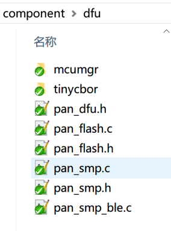
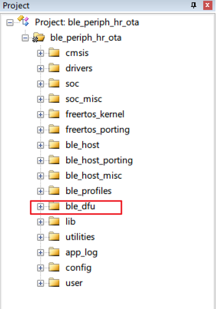
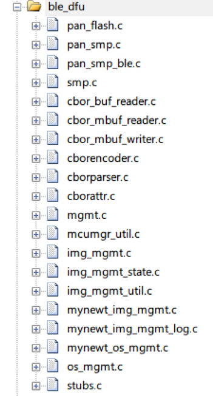
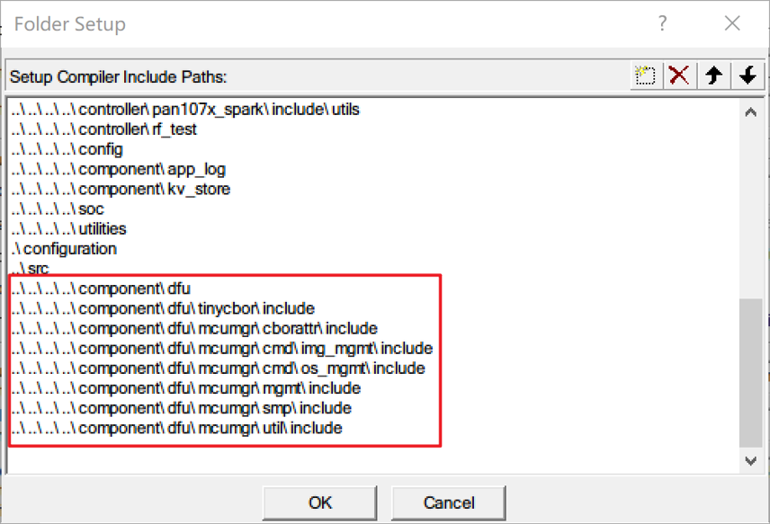
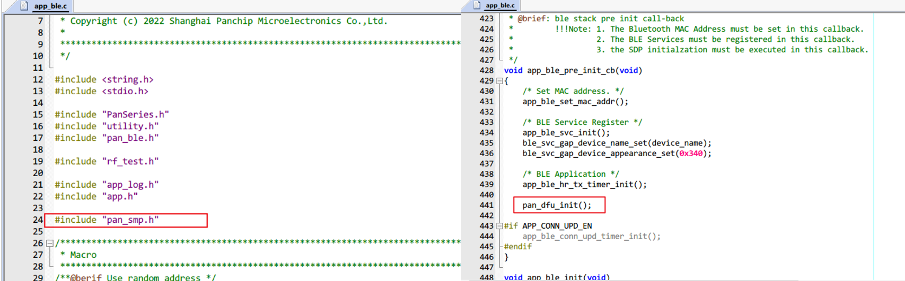
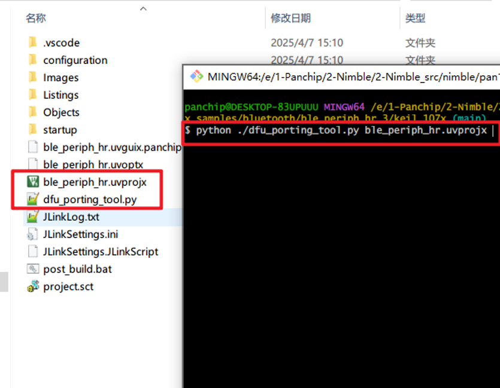
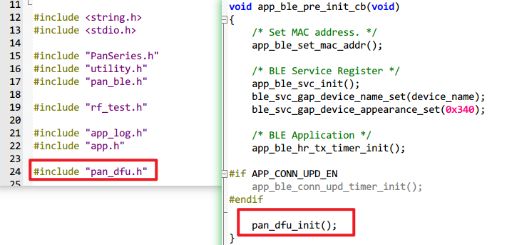
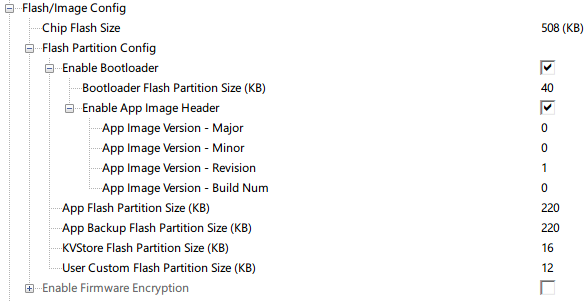
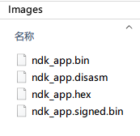

NDK 蓝牙 OTA 移植指南¶
1 概述¶
NDK BLE OTA 功能使用的是开源 DFU 协议（磐启添加了设备相关的适配层），支持通过 NRF Connect App 进行 OTA 固件升级，同时支持 IOS 和安卓版 NRF Connect App。
磐启移植的是 DFU server，如果用户需要将 DFU Client 集成到自己的系统，需要自行处理，可以去 Nordic github 仓库寻找资源。
一个完整的 DFU 功能移植包含2个工作：
DFU 代码移植
工程参数配置（例如：Flash Map 的配置）
2 DFU 代码移植¶
磐启提供了3种 DFU 代码移植方法：
基于支持 OTA demo工程开发
标准移植
快速移植
用户可以在 SDK 的 <home>\nimble\component\dfu路径下找到 DFU 源码。

DFU 源码文件¶
2.1 基于支持 OTA 的 Demo 工程开发¶
用户可以基于 OTA demo工程（ble_periph_hr_ota）开发项目，这个最简单，用户只需要关注 Flash Map 和 BLE 资源要根据实际需求配置。Flash Map 和 BLE 资源的配置选项可以在工程的sdk_config.h中找到。
2.2 DFU 标准移植方法¶
Step1: 在 keil 工程中新建
ble_dfu文件夹（名称可以自己取）
新建ble_dfu文件夹¶
Step2: 通过 keil 添加 DFU 源码文件到 ble_dfu 文件夹中

添加DFU源文件¶
Step3: 添加 DFU 头文件到 keil

添加 DFU 头文件¶
Step4: 在 code 中引入 DFU 头文件
pan_smp.h, 同时在app_ble_pre_init_cb()函数中添加 DFU 初始化函数pan_dfu_init()
添加 DFU 初始化函数到工程¶
到此, DFU 代码移植完成
2.2 DFU 快速移植方法¶
快速移植方法是在标准移植方法的基础上去掉了新建ble_dfu文件夹和添加DFU 源文件到ble_dfu文件夹以及手动添加 DFU 头文件的步骤，也即去掉了标准移植方法的 step1 和 step2 以及 step3，同时对step 4 略微修改
Step1: 在 SDK
<home>/nimble/scripts/路径下找到dfu_porting_tool.py脚本，copy脚本到用户工程目录下，然后执行脚本，脚本将自动添加DFU 头文件到keil工程。(需要安装python)

dfu_porting_tool.py 脚本¶
Step2： 在 code 中引入 DFU 头文件
pan_dfu.h, 同时在app_ble_pre_init_cb()函数中添加 DFU 初始化函数pan_dfu_init()

添加 DFU 初始化函数到工程¶
到此，DFU 代码移植完成
3 工程配置¶
DFU 代码移植完成后，需要根据所使用的芯片 Flash Size和应用来配置 Flash Layout。Flash Layout 主要包含bootloader area、image area、image backup area、kv store area和user custom parameter area配置。
Flash layout的配置选项可以在工程的sdk_config.h中找到。

Flash Layout¶
注意：蓝牙DFU应用中，”Enable App Image Header ” 配置选项必须开启, 用户可以通过image header来维护固件版本
除了上述配置外，可能还需要配置 RTOS 参数或者 BLE 参数，这个与具体应用有关系，无法给出一个具体配置，这里只是给用户做个提示。
4 DFU使用注意事项¶
DFU移植并配置好后，即可通过keil编译生成app image。生成的固件被存储在工程目录下的 Images 文件夹中,其中带 “signed” 字样的是经过脚本处理后的可以OTA的固件。
注意： 工程目录下的 Images 文件夹中的文件 都是通过 post_build.bat 脚本生成的，该脚本在每个demo工程中都有一个，不同的工程略有区别.

Images 文件夹¶
在支持OTA的蓝牙应用中，不能通过 keil 烧录程序，必须通过J-Flash等工具烧录Images文件夹下带”signed” 字样的 bin 或者 hex 文件。因为 keil 直接烧录的程序是没有被签名过的程序，因此无法进行OTA。
如果用户需要 hex 版本的签名固件，需要将如下代码copy 到工程目录下的 post_build.bat 脚本中靠后的位置, 或者直接从SDK中支持OTA 的demo工程中copy 一份 post_build.bat
..\..\..\..\scripts\srec_cat.exe %1\ndk_app.signed.bin -binary -offset 0xA000 -o %1\ndk_app.signed.hex -intel -Output_Block_Size 0x10 IF %errorlevel% NEQ 0 ( @ECHO Error occurred when generating ndk_app.signed.hex, errno is %errorlevel%, exit. exit /b %errorlevel% )
为了使用DFU功能，除了烧录app 固件外，还需烧录 bootloader 固件，bootloader固件可以通过SDK中 mcu_boot 工程编译得到，并直接keil烧录即可。